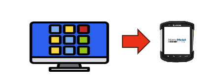
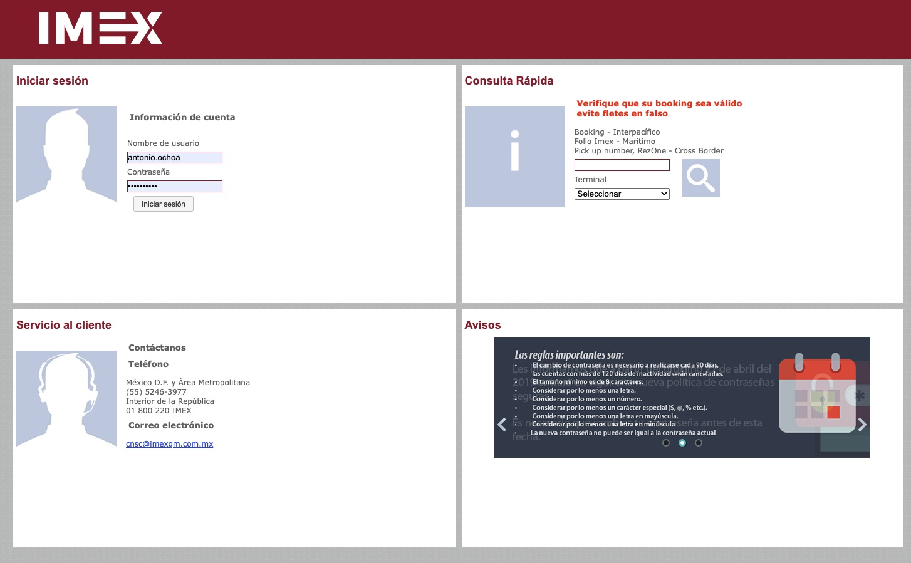
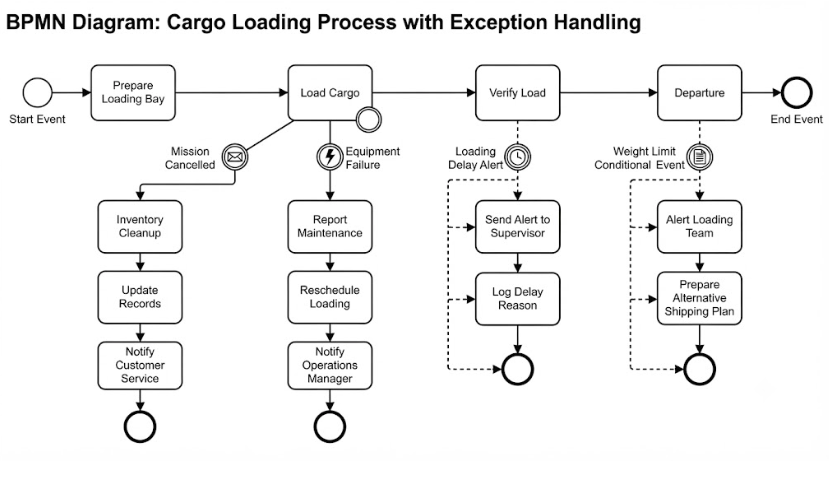

SIMEX App — Rail Operations Mobility
Moving intermodal terminal operations off the desktop and onto handheld devices, so every container movement is recorded where it happens: at the gate and at the train, across Ferromex's 12 intermodal terminals.

From the back office to the terminal yard
Terminal staff recorded every In-Gate, Out-Gate, Train-Load and Train-Unload event in SIMEX, a desktop application. Each movement had to be captured from a fixed workstation, away from the container and the train it described.
The goal was to migrate these operations to a mobile app on handheld devices and use the move to add what a desktop could not offer: photo evidence taken on the spot and OCR recognition of container numbers.

The challenge
Many stakeholders across 12 terminals and a combined software and hardware scope, with operations that could not stop during the transition.
The approach
Signed-off analysis before any code, sprint delivery with user acceptance at every sprint, and a controlled rollout with the legacy system running in parallel.
My role
Project Manager, responsible for end-to-end planning, budget, stakeholder alignment, coordination of the analysis and development teams, and the go-live.
Five terminal events, one mobile workflow
Analysis focused on the five events that move a container through an intermodal terminal, and on the business rules each one must enforce.
In-Gate
- Valid waybill
- Traffic type
- Assigned terminal
- Booking confirmed
Train consolidation
- Route, origin and destination
- Lots and traffic types
- Compatible container types
- Stowage rules
Train load
- Date and time
- User
- Terminal
Train unload
- Date and time
- Container-by-container
- Or full-train unload
Out-Gate
- Payments up to date
- Unload previously recorded
How the project was delivered
A hybrid lifecycle: predictive planning and formal sign-offs at the edges, agile sprints in the middle.
Built a high-level, phased roadmap together with time, scope and cost estimates, which became the baseline for the rest of the project.
With a contracted team of business analysts, I ran requirements workshops with Operations to model the five terminal processes. The work then moved to the target state:
- To-be process models in BPMN, including exception paths.
- UX/UI screen design for handheld devices, reviewed and adjusted with end users.
- Mobile-native features: on-site photo capture and OCR recognition of container numbers.
Everything was consolidated into a single analysis document, signed off by every stakeholder, including the project sponsor.

The signed analysis was broken down into user stories in Jira, with a development and testing schedule. The team delivered in sprints, and each sprint closed with user acceptance testing, so issues surfaced early rather than at the end.
Before handing over to Operations, the team ran internal functional testing against a structured test matrix.
| ID | Module | Test scenario | Result |
|---|---|---|---|
| TC-001 | In-Gate | Reject entry when the waybill is invalid | Pass |
| TC-002 | In-Gate | Register entry with a valid booking and assigned terminal | Pass |
| TC-003 | OCR | Container number read from a photo pre-fills the form | Pass |
| TC-004 | Consolidation | Block an incompatible container type on a train | Pass |
| TC-005 | Train unload | Unload a full train in a single action | Pass |
| TC-006 | Out-Gate | Block exit when payments are outstanding | Pass |
Operations ran end-to-end user acceptance testing across the full workflow. Results were documented in a test report formally signed off by Operations, and the requested adjustments were applied before go-live.
The rollout was designed to protect terminal operations at every step:
- On-site training for every user, with visits to the terminals.
- Controlled release across all 12 terminals on a planned cutover date.
- Parallel run: the legacy system stayed live alongside the new app.
- Go-live support: a dedicated team at headquarters and a 24/7 chat channel for Operations, from cutover through the following week.
A pre-approved bank of development hours was planned from the start to cover post-launch adjustments, so fixes and refinements requested by the terminals did not require a new procurement cycle.
The toolkit behind the delivery
Each stage of the project relied on its own set of proven techniques.
- Requirements workshopsJoint sessions with Operations to capture and validate each terminal process.
- Process modeling (BPMN)As-is and to-be models, exception paths included.
- UX/UI designHandheld screens reviewed and adjusted with end users before development.
- User stories in JiraDerived from the signed analysis document to keep scope traceable.
- Scrum sprintsIncremental delivery against a development and testing schedule.
- Sprint-end UATUsers accepted every increment, so issues surfaced early.
- Functional testingInternal test cycle before handing over to Operations.
- Test matrixStructured coverage of every module and business rule.
- End-to-end UAT sign-offFormal approval from Operations before go-live.
- Cutover planningControlled release across 12 terminals on a set date.
- Parallel runLegacy system kept live as a fallback during adoption.
- Hypercare24/7 support channel plus a pre-approved hours bank.
Technology
Core team: 2 business analysts · 2 .NET front-end developers · 1 SQL Server back-end developer · 1 development lead
Planning a similar rollout?
I lead IT and telecom projects from first workshop to go-live, with operations running the whole way through.